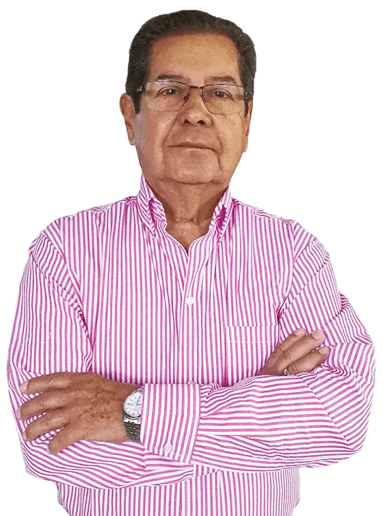
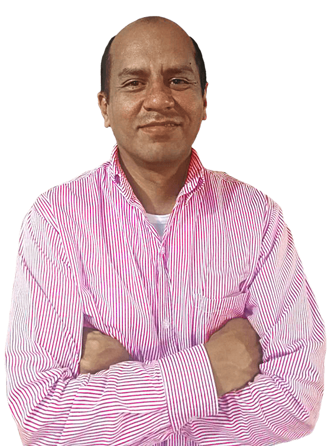
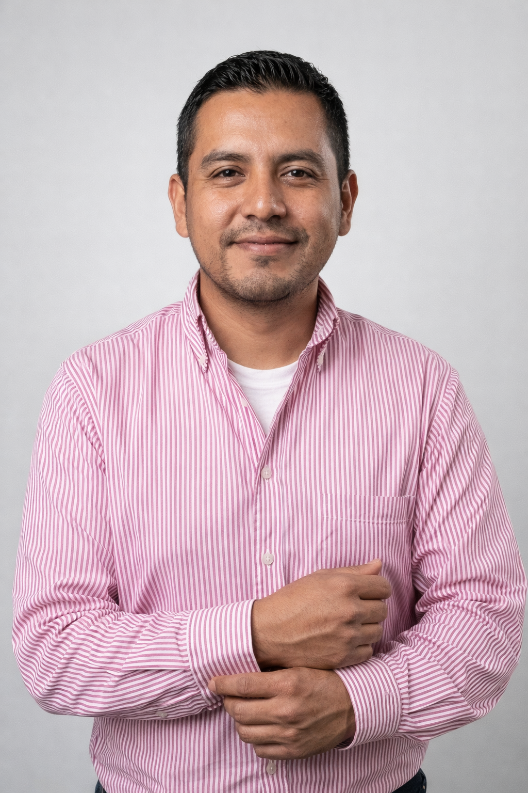

Nosotros
Más de cinco décadas de experiencia aplicadas al desarrollo de soluciones industriales.
EQUIM es un grupo empresarial colombiano especializado en diseño, fabricación y montaje de equipos para proyectos agroindustriales, soluciones portuarias y servicios de izaje.
Historia
Trayectoria al servicio de la agroindustria.
EQUIM concentra su experiencia en el desarrollo de equipos para recibo, elevación, transporte, pre-limpieza, limpieza, secamiento, almacenamiento y molinería de arroz, así como soluciones para el manejo, despacho y almacenamiento de granos en puertos marítimos.
La empresa ha trabajado durante más de 50 años en la producción y montaje de soluciones para el sector, manteniendo una combinación valiosa entre ingeniería, fabricación y ejecución en campo.
Mejora continua
Capacidad técnica con visión de largo plazo.
Trabajamos en mejora continua para contribuir al crecimiento y fortalecimiento de la agroindustria a nivel nacional e internacional, con un enfoque orientado a la confiabilidad y al desempeño del proceso.
Enfoque
La empresa se entiende mejor cuando se presenta por capacidades y sectores.
Procesos agroindustriales
Experiencia en elevación, transporte, pre-limpieza, limpieza, secamiento, almacenamiento y molinería de arroz.
Operación portuaria
Desarrollo de soluciones para manejo y despacho de granos a granel en puertos marítimos.
Ejecución en campo
Montaje e izaje con equipos propios y personal calificado para tareas de movilización y armado de estructuras y equipos.
Equipo visible
Dirección, coordinación y soporte técnico de proyectos.

Gerencia generalHernando Sandoval
Socio fundador y gerente general de EQUIM, con trayectoria asociada al crecimiento de la empresa en el sector.

Proyectos y logísticaJavier Osma
Director de proyectos y logística, con un rol central en la coordinación operativa y la ejecución de montajes.

Diseño e ingenieríaLuis Garcia
Apoyo visible en diseño e ingeniería para el desarrollo y ajuste técnico de soluciones dentro de los proyectos de EQUIM.